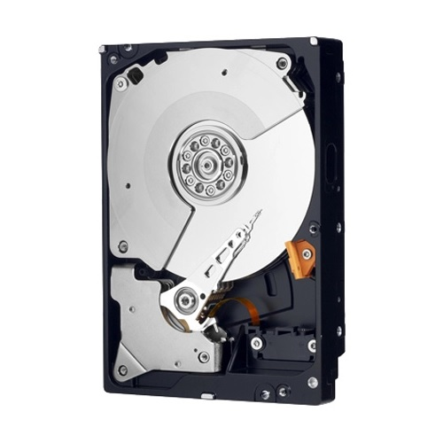

 HDD WD Caviar Black 500 GB
- Форм-фактор 3.5"
- Объем 500 Гб
- Объем буферной памяти 64 Мб
- Скорость вращения 7200 rpm
- Интерфейс Подключение SATA 6Gbit/s
- Внешняя скорость передачи данных 600 Мб/с
- Среднее время задержки (Latency) 4.2 мс
- Ударостойкость при работе 30 G
- Ударостойкость при хранении 350 G
- Уровень шума простоя 29 дБ
- Уровень шума работы 30 дБ
- Потребляемая мощность 6.80 Вт
- Размеры (ШхВхД) 101.6×25.4×147мм
- Вес 440 г